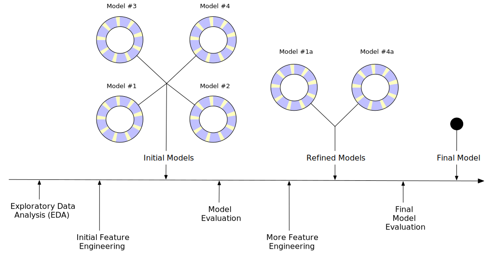

|
DATA SCIENCE USING R
TIDYVERSE WORLD
R is a funcation language, with object orientated abilities, perfect for independent libraries. Tidyverse is a seperate object. It focuses on creating "tidy" data, appropraite for computational statistics, and a "pipe" which turns nested functions into intuitive, stepwise procedural commands.
- BOOK: R for Data Science:
- Visualization, Model, Transform, Tidy, & Import
- 2017 Hadley Wickham, Garrett Grunewald
- https://r4ds.had.co.nz/index.html
- sections and chapters:
- 01 contents & chapter introductions
- explore:
- wrangle
- program
- 18: pipes | 19: functions | 20: vectors | 21: iteration
- model
- 23: model basics | 24: model building | 25: many models
- communicate
- 27: R markdown | 28: graphics for communication | 29: R markdown formats | 30: R markdown workflow
- COURSE: UBC: Introduction to Data Science
- https://ubc-dsci.github.io/introduction-to-datascience/
- chapters:
- BOOK: datasciencebook.ca Jenny Bryan
- COURSE: UBC: stats545 - Data Wrangling: exploration and analysis with R
- (everything but statistical modeling and inference)
- classification | regression | clustering
- https://stat545.com/
- contents
R MODELING PROCESS


- CHEATSHEET: Data Science Cheat Sheet
- REF: Data Modeling - Algorithms & Software Prerequisites
- REF: Analysis by Industry
- REF: contents - presentations on machine learning, deep learning, bots
- REF: Data Mining and Models with R
- data reduction | clustering | classification | anomaly detection | association analysis | regression analysis | sequential patterns | text mining
- ML fields
- classification: assign category characteristics (blue / red / yellow)
- regression: forcast value (temp / price)
- ranking: organize criteria
- clustering: group in clusters
- dimensionality reduction: digital image networking
- BOOK: An Introduction to Statistical Learning
- with Applications in R
- 2021 James | Witten | Hastie | Tikshironi
- www.statlearning.com
- pdf in library
- BOOK: Multivariate Analysis 1: Practical Guide to Cluster Analysis in R
- Unsupervised Machine Learning
- 2017, Alboukadel Kassambora
- pdf in library
- contents
- BOOK: Multivariate Analysis 2: Practical Guide to Principal Components Method in R
- PCA | (M)CA | FAMD | MFA | MCPC | factoextra
- 2017, Alkoukadel Kassambora
- pdf in library
- contents
- DATA MODEL VALIDITY
- REF: contents: model fairness & validity - folder
- BOOK: Weapons of Math Destruction
- 2016 Cathy O'neal
- pdf & textfiles in library
- COGNITIVE SECURUTY:
- misinformation algorithms: via
- fear (OCEAN model, N for neurotic)
- gaslighting (lies)
- pushing what receiver wants to hear, is willing to hear
- person not wanting to listen to information:
- cogntive dissonance (do not want to believe that family, government capable of being dangerous)
- fear (of govt)
- co-dependency (fear of self-reliance - enables manipulator)
- projecting, flipping, denying - person very defensive, angry
my full data science book list
back home
|